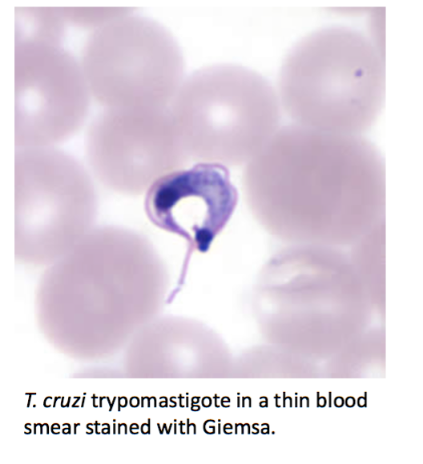

Trypanosoma brucei
Two varieties:
- T.b. gambiense (West African, much more common)
- T.B. rhodesiense (East African)
Symptoms
- Early: Painless Chancre at site of bite
- Weeks - enters blood and lymph => fever, lymphadenopathy, pruritis
- Months to years - CNS symptoms: encephalitis, headaches, sleepiness, unusual behavior
- Also possible: Seizures, Kerandel sign (delayed sensation to pain)
- Gambiense takes longer to develop
Encounter
- via Tsetse fly vector, bite => into blood
Spread
- Spreads through bloodstream and lymph to brain
Multiplication
- T.b. species remain as trypomastigotes in the blood, and divide via binary fission
Evade defenses
- Via antigenic variation of surface protein (cassette model)
Outcome
- Fatal if untreated
Trypanosoma cruzi - Chaga's Disease
Three types:
- Asymptomatic (most common)
- Acute - rash, facial edema, flu-like symptoms
- Romaña's Sign: unilateral periocular / palpebral swelling
- Chronic - rare but serious, and presents years later with:
- GI tract nerve damage => megacolon or mega-esophagus
- Cardiomyopathy
Encounter
- Reduviid bug vector ("kissing bug")
- Bug poops trypomastigotes into wound
- South, Central, and North America (although rare in U.S. / only in Southern States)
Spread and Multiplication
- Convert from trypomastigotes to amastigotes to replicate in tissue, then back to trypomastigotes to enter bloodstream
Diagnosis
- Clear microscopy blood smear for acute cases
- Chronic: Antibody assays
Treatment
- Nifurtimox treats both acute and chronic disease

Babesiosis
A protazoan related to Plasmodium
- Nonspecific, flu-like symptoms
Encounter
- Infected deer ticks (mice / deer reservoir)
- Similar geographic distribution to Lyme disease due to same reservoir and vector
Spread and Multiplication
- Enters into blood via bite and spreads in blood
- Unlike malaria, no liver involvement
- Lysis of RBCs
Outcome
- Contagious via blood transfusion only
- Can cause severe infection if spleen has been removed or if immunocompromised